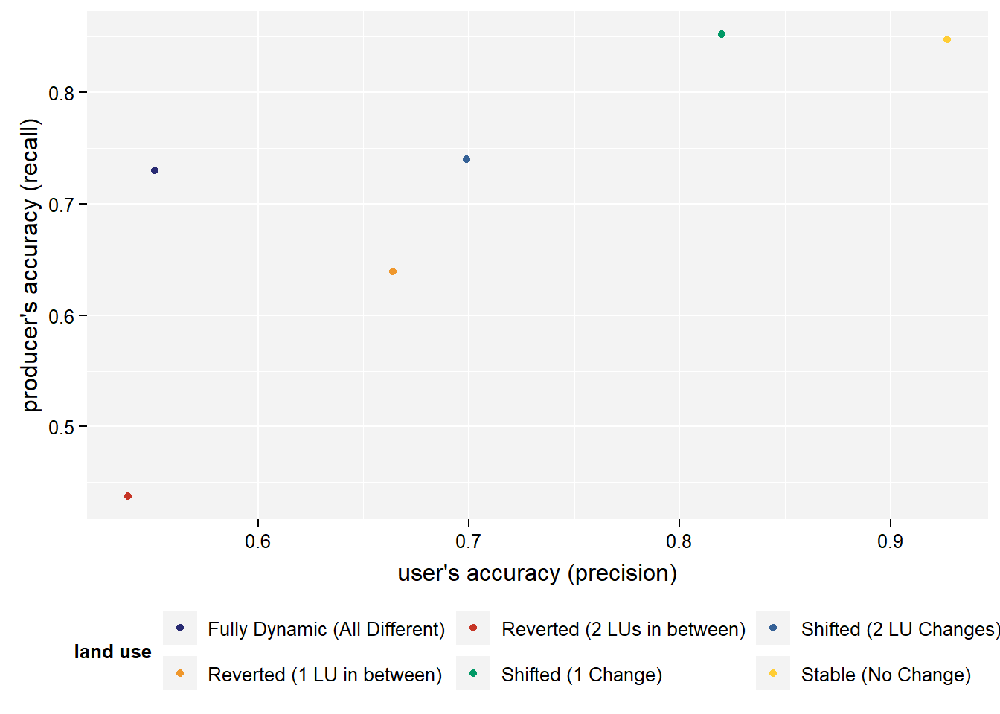

mask_follow_up(c("11123", "22345", "33333"), clustering_position = 2)2 Clustering
Er werden in totaal 6 verschillende functies geschreven om de observaties te clusteren:
2.1 mask_follow_up
Doel
De functie mask_follow_up clustert een reeks landgebruikscodes (LU-codes) op basis van een opgegeven clusteringpositie. Dit betekent dat alle opeenvolgende karakters na de clusteringpositie worden gecontroleerd en vervangen door “X” zodra een verschil wordt gedetecteerd.
Parameters
- variable (character vector): Een vector met landgebruikscodes, elk bestaande uit een reeks karakters.
- clustering_position (integer): De index van het karakter waarop clustering wordt gebaseerd. Dit is de startpositie van de clustering.
Voorbeeld
Input:
output:
[1] "11XX" "22XX" "3333"2.2 mask_follow_up_intensity
Doel
De functie mask_follow_up_intensity bouwt verder op mask_follow_up, maar voegt extra logica toe om de intensiteit van het landgebruik te bepalen. Dit wordt gedaan door te kijken of het landgebruik als intensief of extensief wordt geclassificeerd.
Parameters
- variable (character vector): Een vector met landgebruikscodes.
- LU-klassen (akker, bebouwing, …, water) (integers, standaardwaarden 1 t/m 9): Codering voor verschillende typen landgebruik. clustering_position (integer): De startpositie van de clustering.
Voorbeeld
Input:
mask_follow_up_intensity(c("11123", "22345", "33333"), clustering_position = 2)output:
[1] "11XX_I" "22XX_I" "3333_E"2.3 make_bin_change
Doel
De functie make_bin_change vergelijkt de LU-code op twee specifieke posities en bepaalt of er een verandering in landgebruik heeft plaatsgevonden.
Parameters
- variable (character vector): Een vector met landgebruikscodes.
- clustering_position (integer): De index van het karakter dat als startpunt wordt gebruikt.
- reference_position (integer): De index van het karakter dat als referentie wordt gebruikt.
Voorbeeld
Input:
make_bin_change(c("12345", "22345", "33445"), clustering_position = 1, reference_position = 3)Output:
[1] "Changed" "Changed" "Changed"Hier wordt gekeken of het 1ste karakter (clustering) en het 3de karakter (referentie) gelijk zijn.
2.4 change_frequency
Doel
Deze functie analyseert hoe vaak en op welke manier landgebruik (LU) is veranderd tussen twee tijdstippen: een referentiejaar en een clusteringjaar. Het classificeert de verandering in verschillende categorieën, zoals stabiel, verschoven of volledig dynamisch.
Parameters
- variable (character vector): Een vector met LU-codes over de tijd.
- reference_position (integer): De index van de LU-code in het referentiejaar.
- clustering_position (integer): De index van de LU-code in het clusteringjaar.
Uitvoer
De functie geeft een tekstuele classificatie terug, zoals:
- “Stable (No Change)” = Geen verandering.
- “Reverted (1 LU in between)” = Eén tussenliggende LU die uiteindelijk terugkeert naar het originele LU.
- “Shifted (1 Change)” = Eén verandering zonder terugkeer naar het originele LU.
- “Reverted (2 LUs in between)” = Twee tussenliggende LU’s die terugkeren naar het originele LU.
- “Shifted (2 LU Changes)” = Twee LU-wijzigingen zonder terugkeer.
- “Fully Dynamic (All Different)” = Elk LU in de reeks is uniek.
- “Multiple changes” = Andere patronen van verandering.
Input:
change_frequency(c("12345", "22345", "33445"), clustering_position = 1,
reference_position = 3)Output:
12345 22345 33445
"Shifted (2 LU Changes)" "Shifted (1 Change)" "Shifted (1 Change)" 2.5 presence
Doel
Deze functie bepaalt of een bepaalde landgebruiksklasse (LU) aanwezig, afwezig, verworven of verloren is in een bepaalde periode.
Parameters
- variable (character vector): Een vector met LU-codes.
- clustering_position (integer): De startpositie voor de analyse.
- reference_position (integer): De eindpositie voor de analyse.
- LU (character): De specifieke LU-code waarvoor de aanwezigheid wordt gecontroleerd.
Uitvoer
De functie retourneert een van de volgende categorieën:
- “Stable presence” → De LU is gedurende de hele periode aanwezig.
- “Stable absence” → De LU is nooit aanwezig.
- “Stable loss” → De LU verdwijnt vroeg in de periode en komt niet terug.
- “Eventual loss” → De LU verdwijnt later in de periode.
- “Eventual gain” → De LU verschijnt later in de periode.
- “Stable gain” → De LU is aanwezig vanaf het begin en blijft bestaan.
- “Intermittent Presence” → De LU is soms aanwezig en soms niet.
Input:
presence(c("12345", "22345", "33445"), clustering_position = 1,
reference_position = 3, LU = 4)Output:
12345 22345 33445
"Stable absence" "Stable absence" "Stable loss" 2.6 transition_present
Doel
Deze functie controleert of een bepaalde overgang (transitie) van LU’s voorkomt in een bepaalde periode en classificeert hoe deze transitie zich gedraagt.
Parameters
- variable (character vector): Een vector met LU-sequenties over de tijd.
- transition (character): De overgang van LU’s die wordt gezocht (bijv. “12” voor een overgang van LU 1 naar LU 2).
- clustering_position (integer): De beginpositie van de analyse.
- reference_position (integer): De eindpositie van de analyse.
Uitvoer
De functie retourneert een tekstuele beschrijving van hoe vaak en in welke vorm de transitie voorkomt, zoals:
- “Transitie 1 keer aanwezig en laatste LU van de transitie duikt niet opnieuw op” → De transitie gebeurt één keer en de laatste LU van de overgang komt niet meer terug.
- “Transitie minstens 1 keer aanwezig en laatste LU van laatste transitie duikt opnieuw op” → De overgang gebeurt meerdere keren en de laatste LU komt terug.
- “Niet aanwezig en laatste LU niet aanwezig” → De transitie komt niet voor en de laatste LU is ook niet aanwezig in de sequentie.
Input:
transition_present(c("12345", "22345", "33445"), clustering_position = 1,
reference_position = 3, transition = 23)Output:
12345
"Transitie 1 keer aanwezig en laatste LU van de transitie duikt niet opnieuw op"
22345
"Transitie 1 keer aanwezig en laatste LU van de blijft angehouden"
33445
"Niet aanwezig en laatste LU niet aanwezig" 2.7 Clustering
Om het gebruik van bovenstaande functies te vergemakkelijken werd de clustering-functie gecreerd. Deze functie wordt gebruikt om landgebruiksklassen te analyseren en te groeperen op basis van verschillende clustering-methoden. De functie vergelijkt een voorspelde dataset (prediction) met een referentiedataset (reference) over een reeks jaren en past een geselecteerde clusteringmethode toe.
Parameters
- years: Een vector met vier jaren waarin landgebruik wordt geanalyseerd.
- prediction: Voorspelde landgebruikswaarden.
- reference: Referentiewaarden voor landgebruik.
- LU: De specifieke landgebruikswaarde om te analyseren.
- transition: Een specifieke overgang van landgebruik.
- clustering_year: Het jaar waarin clustering wordt uitgevoerd.
- clustering_method: De clusteringmethode die wordt toegepast. Mogelijke waarden: “mask_follow_up” “mask_follow_up_intensity” “make_bin_change” “change_frequency” “transition” “presence”
- akker, bebouwing, bos, … , water: Codering van landgebruikstypen als numerieke waarden.
- reference_year: Het jaar waarmee clustering wordt vergeleken.
Controlemechanismen
De functie voert verschillende controles uit, zoals:
- Het controleren van de clusteringmethode.
- Het valideren van de jaren (bijvoorbeeld, ze moeten in aflopende volgorde staan).
- Het controleren of de voorspelling en referentie even lang zijn en dezelfde niveaus hebben.
- Het verifiëren van de lengte en het formaat van de landgebruikscodes en overgangen.
Toepassing van Clusteringmethoden
De clusteringmethode wordt toegepast met een loop. Voor elke methode:
- Wordt de juiste bewerking uitgevoerd (bijvoorbeeld mask_follow_up, change_frequency, enz.).
- Wordt de voorspelde en referentiewaarde aangepast.
- Worden de niveaus van de gegevens consistent gehouden.
Input:
# Simulatiedata
data_test <- data.frame(
observed = c("1122", "2233", "3344", "4455"),
reference = c("1111", "2222", "3333", "4444")
)
# Roep de functie aan
resultaat <- clustering(
years = c(2022, 1969, 1873, 1774),
prediction = data_test$observed,
reference = data_test$reference,
LU = "1",
transition = "12",
clustering_year = 2022,
clustering_method = "change_frequency",
reference_year = 1774
)Output:
observed reference prediction_change_frequency reference_change_frequency
1 1122 1111 Shifted (1 Change) Stable (No Change)
2 2233 2222 Shifted (1 Change) Stable (No Change)
3 3344 3333 Shifted (1 Change) Stable (No Change)
4 4455 4444 Shifted (1 Change) Stable (No Change)2.8 Voorbeeld
De clustering werd toegepast op de gegeven dataset. De functie ‘change_frequency’ werd gebruikt als clusteringsmethode. Na de clustering werd de overall accuracy (OA) de user accuracy (UA) en producer accuracy bepaald (PA) (Tabel 2.1) en geplot (Figuur 2.1). Tijdens deze berekening werd er geen rekening gehouden met de oppervlakte verhouding van elk stratum.
| Class: Fully Dynamic (All Different) | Class: Reverted (1 LU in between) | Class: Reverted (2 LUs in between) | Class: Shifted (1 Change) | Class: Shifted (2 LU Changes) | Class: Stable (No Change) |
|---|---|---|---|---|---|---|
Sensitivity | 0.73 | 0.64 | 0.44 | 0.85 | 0.74 | 0.85 |
Specificity | 0.99 | 0.97 | 1.00 | 0.88 | 0.93 | 0.97 |
Pos Pred Value | 0.55 | 0.66 | 0.54 | 0.82 | 0.70 | 0.93 |
Neg Pred Value | 0.99 | 0.97 | 1.00 | 0.90 | 0.94 | 0.93 |
Precision | 0.55 | 0.66 | 0.54 | 0.82 | 0.70 | 0.93 |
Recall | 0.73 | 0.64 | 0.44 | 0.85 | 0.74 | 0.85 |
F1 | 0.63 | 0.65 | 0.48 | 0.84 | 0.72 | 0.89 |
Prevalence | 0.02 | 0.07 | 0.01 | 0.39 | 0.18 | 0.33 |
Detection Rate | 0.01 | 0.05 | 0.00 | 0.33 | 0.13 | 0.28 |
Detection Prevalence | 0.03 | 0.07 | 0.01 | 0.41 | 0.19 | 0.30 |
Balanced Accuracy | 0.86 | 0.81 | 0.72 | 0.87 | 0.84 | 0.91 |

De functie clustering_area is een vereenvoudigde versie van clustering functie, die het mogelijk maakt om clustering toe te passen op één dataset zonder een externe referentie. Dit betekent dat de clustering puur wordt toegepast op de opgegeven data (variable) zonder externe vergelijkingen. Dit is handig voor de dataset met alle mogelijke veranderingen in landgebruik (LU).
Deze dataset bevat getallen kleiner dan 1000. Wil dit zeggen dat in deze gevallen er 0 moet voorkomen om aan 4 cijfers te geraken? In dit geval zou “10” “0010” worden.
Dockx, R. et al. (2025) 10.5281/zenodo.842223